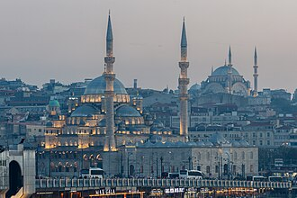

Apresentação
La mosquée neuve ou mosquée Nouvelle est une mosquée impériale ottomane située dans le quartier d'Eminönü à Istanbul, en Turquie. Elle se situe sur la rive sud de la Corne d'Or, au débouché sud du pont de Galata, à proximité du Bazar aux épices sur la place d'Eminönü. Cette mosquée est une des plus connues d'Istanbul.
The New Mosque and later New Valide Sultan Mosque after its partial reconstruction and completion between 1660 and 1665, is an Ottoman imperial mosque located in the Eminönü quarter of Istanbul, Turkey. It is situated on the Golden Horn, at the southern end of the Galata Bridge, and is a notable Istanbul landmark marking the crossing from the old historic core of the city to the Beyoğlu (Pera) district. The mosque is a notable example of the Sultanate of Women period in Ottoman Empire.
Yeni Cami ya da Valide Sultan Camii, İstanbul'da 1597 yılında Sultan III. Murad'ın eşi Safiye Sultan'ın emriyle temeli atılan ve 1665'te zamanın padişahı IV. Mehmed'in annesi Turhan Hatice Sultan'ın büyük çabaları ve bağışlarıyla tamamlanıp ibadete açılan camidir.
Masjid Yeni Eminönü, secara resmi bernama Masjid Valide Sultan adalah masjid peninggalan Kesultanan Utsmaniyah yang berada di kawasan Eminönü, distrik Fatih, Provinsi Istanbul, Turki. Masjid yang terletak di Tanduk Emas, di ujung selatan Jembatan Galata ini, awalnya dibangun pada tahun 1597 atas perintah Safiye Sultan, istri dari Sultan Murad III. Bagian luar masjid ini memiliki 1 kubah utama dan 65 kubah kecil dalam susunan piramidal, serta dua minaret.
ینی مسجد یا جدید مسجد یا نئی مسجد جس کا اصل نام والدہ سلطان مسجد (ترکی زبان: Valide Sultan Camii) اور اس کے بعد نئی والدہ سلطان مسجد (ترکی زبان: Yeni Valide Sultan Camii) ایک عثمانی شاہی مسجد ہے جو استنبول، ترکی میں 1660ء اور 1665ء کے درمیان تعمیر کی گئی۔ یہ مسجد شاخ زریں میں غلطہ پل کے نزدیک واقع ہے۔
Die Yeni Cami, deutsch Neue Moschee, befindet sich im Istanbuler Stadtteil Eminönü, in der Nähe des Gewürzbasars, fast am Ufer, am südöstlichen Ende des Goldenen Horns am Südende der neuen Galatabrücke. Sie ist auch als Valide-Sultan-Moschee oder Taubenmoschee bekannt, gebräuchlich ist aber der Name Yeni Cami. Die Moschee ersetzte seinerzeit eine Brandruine, weshalb sie „Neue“ Moschee genannt wurde. Fertiggestellt wurde sie im Jahre 1663.
La mezquita Nueva o mezquita Yuni es una mezquita situada en el distrito de Eminönü, Estambul, Turquía. La mezquita está situada en el Cuerno de Oro, al sur del puente de Gálata, siendo una de las vistas más conocidas de la ciudad.
La Yeni Cami o Moschea della Valide Sultan è una moschea imperiale ottomana che si trova ad Istanbul, in Turchia. L'edificio si trova nel distretto di Fatih e nel quartiere di Eminönü, quasi sulla sponda meridionale del Corno d'oro e di fronte al Ponte di Galata. È uno degli edifici più visitati di Istanbul.
A Mesquita Yeni ou Mesquita Yeni Valide é uma mesquita otomana situada no bairro de Eminönü, distrito de Fatih, Istambul, Turquia, junto à embocadura do Corno de Ouro, frente à extremidade sul da Ponte de Gálata.
De Yeni Cami of Yeni-moskee is een moskee in de Turkse stad Istanboel, in het district Eminönü. De moskee ligt aan de ingang van de Egyptische bazaar, niet ver van de Galatabrug over de Gouden Hoorn, die het district Eminönü met Galata verbindt.
新清真寺 或蘇丹皇太后清真寺 是一座皇家清真寺，位于土耳其伊斯坦布尔的艾米諾努区，加拉塔大橋南端，濒临金角湾。它是伊斯坦布尔最著名的景点之一。
예니 모스크(튀르키예어: Yeni Cami 예니 자미[*]), 발리데 술탄 모스크(영어: Valide Sultan Camii 발리데 술탄 자미[*]), 영어식 표현으로 뉴 모스크(영어: New Mosque)는 터키 이스탄불에 위치한 모스크이다. 1665년에 완성되었다. 금각만 위에 있으며, 갈라타 다리 남동쪽 끝에 위치한다. 이 모스크는 이스탄불의 유명 관광명소로 잘 알려져 있다.
सन् ६६१ में खलीफ़ा क़ा जब निर्माण पूरा होने पर सुल्तान को इसका पता चला तो उसने सख्त नाराजगी जताई क्योंकि इस समय केवल मस्जिद हराम के मेनारों की छह लेकिन क्योंकि मस्जिद का निर्माण पूरा हो चुका था इसलिए समस्या का हल यह निकाला गया कि मस्जिद हराम में मीनार की वृद्धि कर इसे मेनारों की सात कर दी गई। मस्जिद के मुख्य कमरे पर कई गुंबद हैं
Но́вая Мече́ть, также известная как Мече́ть Валиде́ Султа́н или Но́вая Мече́ть Валиде́ Султа́н — одна из больших мечетей Стамбула. Расположена в старой части города на одноименной площади в районе Эминёню и Галатского моста.
Moscheea Sultan Valide sau Moscheea Nouă este o moschee imperială otomană reprezentativă și un monument emblematic al Istanbulului din epoca de înflorire a imperiului. Ea domină latura de răsărit a întinsei piețe Eminőnǖ, pe latura sudică a Cornului de Aur, la întâlnirea apelor acestuia cu cele ale Bosforului și la răsărit de Podul Galata.
No mapa
Documentos e ligações
- Wikipédia — Français
- Wikipédia — العربية
- Wikipédia — English
- Wikipédia — Türkçe
- Wikipédia — Bahasa Indonesia
- Wikipédia — اردو
- Wikipédia — Deutsch
- Wikipédia — Español
- Wikipédia — Italiano
- Wikipédia — Português
- Wikipédia — Nederlands
- Wikipédia — 中文
- Wikipédia — 한국어
- Wikipédia — हिन्दी
- Wikipédia — Русский
- Wikipédia — Română
- Wikidata — Q911720
Dados: Wikidata (CC0), atualizados de 3 em 3 meses. O ano é a data de construção mais antiga conhecida do edifício: para um edifício que se tornou mesquita mais tarde (como Santa Sofia), é a do edifício original. Fotos: Wikimedia Commons, autor e licença na página de cada foto.